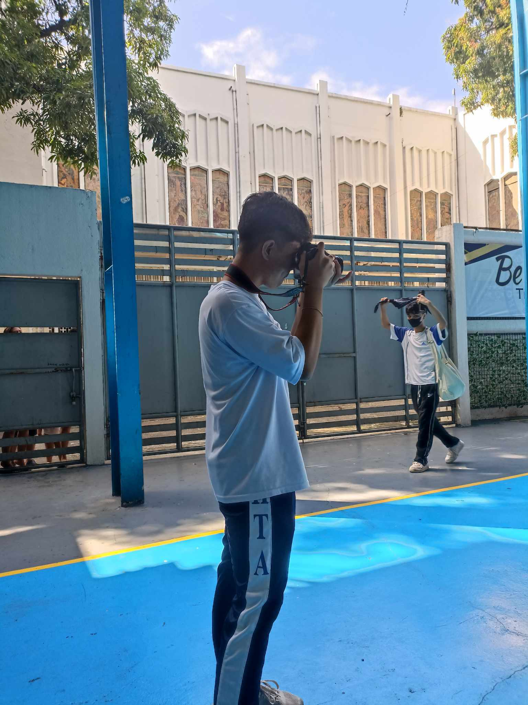
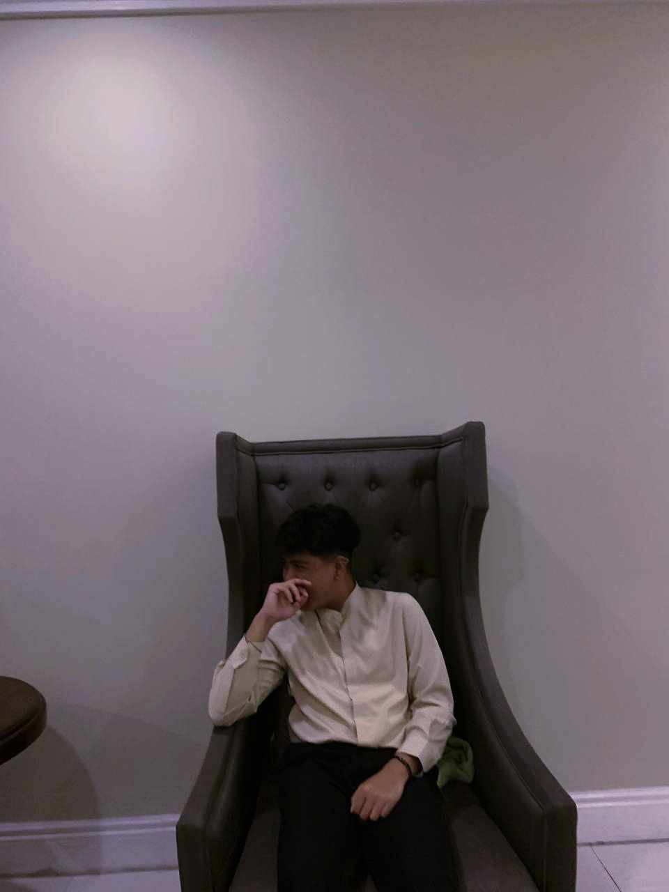

Hi, I'm
KIEL ANTHONY VILLANUEVA
GRADE 11-ICT
PERSONAL DEVELOPMENT PETA
Who am I?

I am a student who loves coding most of the time.
Loves to create program and stuff that makes me happy and motivated.
I like to do things other than programming, such as playing the drums and taking a shot of the moon and sky.
Other things..
As most of you don't know, I am a shy and introverted around strangers and barely talks or starts a converstation.
I'm sometimes Insecure about my looks.
That's why I do what makes me happy and forget these problems like Playing Games.


cosplay matsuri (december, 2022)
It helps be express my inner-self and do what I want but with a different looks.
I overthink too much that it turns into a dilemma on which I need to continue to be?
that I need to be an extrovert and be more social just because I do this kind stuff
or continue to be a introverted person with social anxiety which makes finding more friends harder.

fb.com/kielanthony.villanueva
_clueless.

Clueless25
kielanthony1224@gmail.com